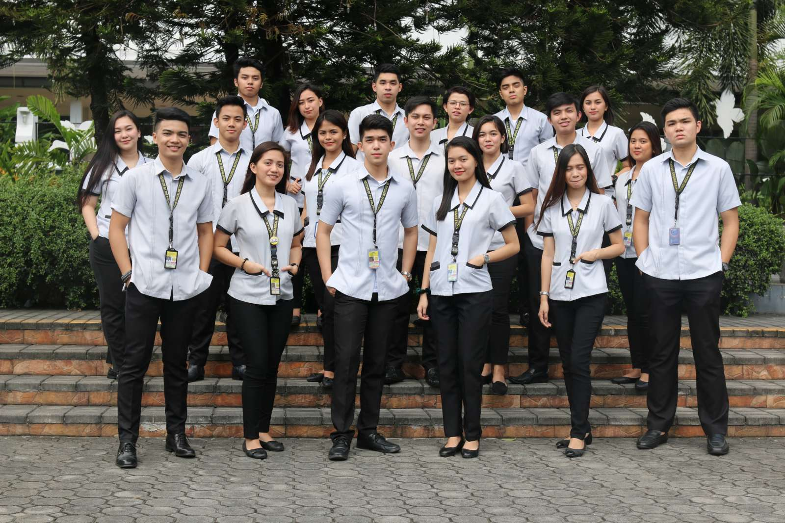

ABOUT T.I.P
History
On February 8, 1962, a group of educators headed by Engineer Demetrio A. Quirino Jr. and Dr. Teresita U. Quirino established the TECHNOLOGICAL INSTITUTE OF THE PHILIPPINES as a private non-sectarian stock school.
T.I.P. laid down its objective based on its founders’ vision: 1) to maintain high standards of instruction; 2) to bring within the reach of the masses the blessings of higher education; and 3) to cooperate with the government in the implementation of its economic and social amelioration programs.
The school committed itself to educating and developing men and women who could turn the wheels of progress and industry. T.I.P.’s initial offering of courses included Chemical Engineering, Civil Engineering, Electrical Engineering, Mechanical Engineering, and Architecture. It also offered Industrial Education, Industrial Arts, Liberal Arts, High School, and various trade courses. T.I.P.’s first site was the Lorenzana Building in Quiapo, Manila. The school had an initial enrollment of 2,400 which steadily increased throughout the years, prompting the school to slowly but surely expand. In 1967, it set up its main site at G. Puyat Street, Quiapo, Manila.
T.I.P. then directed itself towards specialization in the field of technology. In 1977, it offered a two-year associate course in Marine Engineering. Then in 1980, the Liberal Arts, Education, and High School programs were phased out to make way for the school’s new thrust.
In 1981, additional buildings were leased and the T.I.P. P. Casal, Quiapo location was opened to accommodate the growing student population which had reached over 23,000. T.I.P. Arlegui was opened three years later across P. Casal, both areas being collectively known as the T.I.P. Manila campus. Currently, T.I.P. Manila has four (4) main buildings across the combined 2.3-hectares of the two sites.
The founders opened T.I.P. Quezon City in 1983 along 20th Avenue of Cubao as their answer to the Philippine government’s call for dispersal to decongest the Manila University Belt. Through the years, the Quezon City campus acquired adjacent properties, including a frontage along Aurora Boulevard in the early 2000s. At present, T.I.P. Quezon City has ten (10) main buildings spread out in its 3.3-hectare site.
T.I.P.’s institutional campaign for quality began in 1999. The school’s Quality Management System (QMS) was certified compliant with the international standard ISO 9001:1994 by Det Norska Veritas (DNV) during this year. The T.I.P. QMS has since then passed regular ISO recertification and surveillance audits.
The turn of the millennium also saw T.I.P.’s campaign to externally validate the quality of its programs. From 2000 to the present, T.I.P. has been voluntarily applying its programs for local and international accreditations from respected organizations. These accreditations include ones from ABET, the US-based global gold standard in engineering and computing accreditation; the Seoul Accord, a multilateral agreement among agencies allowing professional mobility between the Philippines and the pact’s signatory countries; Philippine Association of Colleges and Universities Commission on Accreditation (PACUCOA) under the umbrella of the Federation of Accrediting Agencies of the Philippines (FAAP); the Philippine Technological Council; and the Philippine Computer Society (PCS) Information and Computing Accreditation Board (PICAB).
During this period, the Commission on Higher Education (CHED) also awarded 16 Centers of Excellence and Centers of Development to both T.I.P. campuses. Moreover, CHED also awarded Autonomous Status to both T.I.P. Quezon City and T.I.P. Manila in 2016 and again in 2019. Autonomous status is the highest honor CHED can bestow upon a higher education institution.
In response to the nationwide K-12 basic and secondary education program implementation, T.I.P. applied for and was granted permit to offer a standalone Senior High School (SHS) program in 2015. The strands offered by the T.I.P. SHS currently include Science, Technology, and Mathematics (STEM); Accountancy, Business, and Management (ABM); and Humanities and Social Sciences (HUMSS).
On top of its campaign towards programmatic excellence on a national and international level, T.I.P. also embarked on a new direction. Called T.I.P. TechnoCoRe, this thrust was established in 2017 to institutionalize Technopreneurship and Collaborative Applied Research into its brand of education. T.I.P. TechnoCoRe involves instilling the core technopreneurship skills of (1) problem-opportunity formulation, (2) ideation, (3) validation, and (4) execution into T.I.P. students, faculty members, researchers, and other stakeholders. T.I.P. TechnoCoRe also involves the active establishment of collaborative applied research partnerships with government, industry, and other organizations.
As its commitment to this thrust, T.I.P. in 2019 opened the T.I.P. TechnoCoRe building in its Quezon City campus. It is a seven-storey innovation hub housing T.I.P.’s state-of-the-art classrooms, seminar rooms, computer rooms, and engineering, computing, and fabrication laboratories.
Coming from the heels of collaboration, 2019 also saw T.I.P. partnering with the Far Eastern University (FEU) to establish Edustria High School at the LIMA Technology Center in Lipa, Batangas. This joint venture educational offering aims to provide industry-relevant education through active partnerships with nearby local and multinational corporations that shall enable its students to achieve meaningful careers, economic upliftment, and life aspirations.
2020 saw the world getting hit by the COVID-19 pandemic. To ensure education continuity and the community’s safety, T.I.P. exclusively implemented online and flexible learning for all T.I.P. students in the 1st Semester of SY 2020-2021. Within months from the start of the pandemic, the institution focused on reengineering its services, redesigning processes, and conducting countless training to adequately prepare the school for this new normal of teaching and learning. T.I.P. LEADS—which stands for Learning Experience Using Alternative-Design Systems—came to be. It is the collectivity of all these efforts especially towards online student-centric initiatives. T.I.P. LEADS is the school’s innovative way of making the remote learning experience better for T.I.P.ians, wherever they may be.
At present, despite the pandemic, the Technological Institute of the Philippines remains firmly committed to the preservation of global excellence, leadership in engineering and technological education in the Philippines, and continuous improvement for its students, alumni, and employees alike.